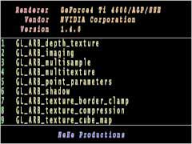

|
第24課 |
 |
|  |
擴展，剪裁和TGA圖像文件的加載:
在這一課裡，你將學會如何讀取你顯卡支持的OpenGL的擴展，並在你指定的剪裁區域把它顯示出來。 |
|
 |
 |
這個教程有一些難度，但它會讓你學到很多東西。我聽到很多朋友問我擴展方面的內容和怎樣找到它們。這個教程將交給你這
一切。
我將教會你怎樣滾動屏幕的一部分和怎樣繪製直線，最重要的是從這一課起，我們將不使用AUX庫，以及*.bmp文件。我將告訴你如何使用Targa(TGA)圖像文件。因為它簡單並且支持alpha通道，它可以使你更容易的創建酷的效果。
接下來我們要做的第一件事就是不包含glaux.h頭文件和glaux.lib庫。另外，在使用glaux庫時，經常會發生一些可疑的警告，現在我們可以測定告別它了。 |  |
#include <stdarg.h> // 處理可變參數的函數的頭文件
#include <string.h> // 處理字符串的頭文件
|
接下來我們添加一些變量，第一個為滾動參數。第二給變量記錄擴展的個數，swidth和sheight記錄剪切矩形的大小。base為字體顯示列表的開始值。 |
|
int scroll; // 用來滾動屏幕
int maxtokens; // 保存擴展的個數
int swidth; // 剪裁寬度
int sheight; // 剪裁高度
GLuint base; // 字符顯示列表的開始值
|
現在我們創建一個數據結構用來保存TGA文件，接著我們使用這個結構來加載紋理。 |
|
typedef struct // 創建加載TGA圖像文件結構
{
GLubyte *imageData; // 圖像數據指針
GLuint bpp; // 每個數據所佔的位數（必須為24或32）
GLuint width; // 圖像寬度
GLuint height; // 圖像高度
GLuint texID; // 紋理的ID值
} TextureImage; // 結構名稱
TextureImage textures[1]; // 保存一個紋理
|
這個部分的代碼將要加載一個TGA文件並把它轉換為紋理。必須注意的是這部分代碼只能加載24/32位的不壓縮的TGA文件。
這個函數包含兩個參數，一個保存載入的圖像，一個為將載入的文件名。
TGA文件包含一個12個字節的文件頭，載入圖像後，我們用type來設置圖像中像素格式在OpenGL中的對應。如果是24位的圖像我們使用GL_RGB，如果是32位的圖像我們使用GL_RGBA。 |
|
bool LoadTGA(TextureImage *texture, char *filename) // 把TGA文件加載入內存
{
GLubyte TGAheader[12]={0,0,2,0,0,0,0,0,0,0,0,0}; // 無壓縮的TGA文件頭
GLubyte TGAcompare[12]; // 保存讀入的文件頭信息
GLubyte header[6]; // 保存最有用的圖像信息，寬，高，位深
GLuint bytesPerPixel; // 記錄每個顏色所佔用的字節數
GLuint imageSize; // 記錄文件大小
GLuint temp; // 臨時變量
GLuint type=GL_RGBA; // 設置默認的格式為GL_RGBA，即32位圖像
|
下面這個函數讀取TGA文件，並記錄文件信息。TGA文件格式如下所示：
Tga圖像格式
無顏色表 rgb 圖像
| 偏移 |
長度 |
描述 |
32位常用圖像文件各個字節的值 |
| 0 |
1 |
指出圖像信息字段的長度，其取值範圍是 0 到 255 ，當它為 0 時表示沒有圖像的信息字段。 |
0 |
| 1 |
1 |
是否使用顏色表，0 表示沒有顏色表，1 表示顏色表存在 |
0 |
| 2 |
1 |
該字段總為 2。圖像類型碼，tga一共有6種格式，2表示無顏色表 rgb 圖像 |
2 |
| 3 |
5 |
顏色表規格，總為0。 |
0 |
| 4 |
0 |
| 5 |
0 |
| 6 |
0 |
| 7 |
0 |
| 8
10 圖像規格說明
開始 |
| 8 |
2 |
圖像 x 坐標起始位置，一般為0 |
0 |
| 9 |
| 10 |
2 |
圖像 y 坐標起始位置，一般為0 |
0 |
| 11 |
| 12 |
2 |
圖像寬度，以像素為單位 |
256 |
| 13 |
| 14 |
2 |
圖像高度，以像素為單位 |
256 |
| 15 |
| 16 |
1 |
圖像每像素存儲佔用位（bit）數 |
32 |
| 17 |
1 |
圖像描述符字節
bits 3-0 - 每像素對應的屬性位的位數，對於 TGA 24，該值為 0
bit 4 - 保留，必須為 0
bit 5 - 屏幕起始位置標誌，0 = 原點在左下角，1 = 原點在左上角
一般這個字節設為0x00即可
|
00100000(2) |
| 18 |
可變 |
圖像數據域
這裡存儲了（寬度）x（高度）個像素，每個像素中的 rgb 色值該色值包含整數個字節 |
... |
如果一切順利，讀取文件後關閉文件。 | |
FILE *file = fopen(filename, "rb"); // 打開一個TGA文件
if( file==NULL || // 文件存在麼?
fread(TGAcompare,1,sizeof(TGAcompare),file)!=sizeof(TGAcompare) || // 是否包含12個字節的文件頭?
memcmp(TGAheader,TGAcompare,sizeof(TGAheader))!=0 || // 是否是我們需要的格式?
fread(header,1,sizeof(header),file)!=sizeof(header)) // 如果是讀取下面六個圖像信息
{
if (file == NULL) // 文件不存在返回錯誤
return false;
else
{
fclose(file); // 關閉文件返回錯誤
return false;
}
}
|
下面的代碼記錄文件的寬度和高度，並判斷文件是否為24位/32位TGA文件。 |
|
texture->width = header[1] * 256 + header[0]; // 記錄文件高度
texture->height = header[3] * 256 + header[2]; // 記錄文件寬度
if( texture->width <=0 || // 寬度是否小於0
texture->height <=0 || // 高度是否小於0
(header[4]!=24 && header[4]!=32)) // TGA文件是24/32位？
{
fclose(file); // 如果失敗關閉文件，返回錯誤
return false;
}
|
下面的代碼記錄文件的位深和加載它需要的內存大小 |
|
texture->bpp = header[4]; // 記錄文件的位深
bytesPerPixel = texture->bpp/8; // 記錄每個像素所佔的字節數
imageSize = texture->width*texture->height*bytesPerPixel; // 計算TGA文件加載所需要的內存大小
|
下面的代碼為圖像數據分配內存並載入它 |
|
texture->imageData=(GLubyte *)malloc(imageSize); // 分配內存去保存TGA數據
if( texture->imageData==NULL || // 系統是否分配了足夠的內存？
fread(texture->imageData, 1, imageSize, file)!=imageSize) // 是否成功讀入內存?
{
if(texture->imageData!=NULL) // 是否有數據被加載
free(texture->imageData); // 如果是，則釋放載入的數據
fclose(file); // 關閉文件
return false; // 返回錯誤
}
|
TGA文件中，顏色的存儲順序為BGR，而OpenGL中顏色的順序為RGB，所以我們需要交換每個像素中R和B的值。如果一切順利，TGA文件中的圖像數據將按照OpenGL的要求存儲在內存中了。 |
|
for(GLuint i=0; i<int(imageSize); i+=bytesPerPixel) // 循環所有的像素
{ // 交換R和B的值
temp=texture->imageData[i];
texture->imageData[i] = texture->imageData[i + 2];
texture->imageData[i + 2] = temp;
}
fclose (file); // 關閉文件
|
下面的代碼創建一個紋理，並設置過濾方式為線性 |
|
// 創建紋理
glGenTextures(1, &texture[0].texID); // 創建紋理，並記錄紋理ID
glBindTexture(GL_TEXTURE_2D, texture[0].texID); // 綁定紋理
glTexParameterf(GL_TEXTURE_2D, GL_TEXTURE_MIN_FILTER, GL_LINEAR); // 設置過濾器為線性過濾
glTexParameterf(GL_TEXTURE_2D, GL_TEXTURE_MAG_FILTER, GL_LINEAR);
|
判斷圖像的位數是否為24，如果是則設置類型為GL_RGB |
|
if (texture[0].bpp==24) // 是否為24位圖像？
{
type=GL_RGB; // 如果是設置類型為GL_RGB
}
|
下面的代碼在OpenGL中創建一個紋理 |
|
glTexImage2D(GL_TEXTURE_2D, 0, type, texture[0].width, texture[0].height, 0, type, GL_UNSIGNED_BYTE, texture[0].imageData);
return true; // 紋理綁定完成，成功返回
}
|
下面的代碼是從圖像創建字體的典型的方法，這些代碼將包含在後面的課程中，以顯示文字。
只有一個不同的地方，紋理0用來保存字符圖像。 |
|
GLvoid BuildFont(GLvoid) // 創建字體顯示列表
{
base=glGenLists(256); // 創建256個顯示列表
glBindTexture(GL_TEXTURE_2D, textures[0].texID); // 綁定紋理
for (int loop1=0; loop1<256; loop1++) // 循環創建256個顯示列表
{
float cx=float(loop1%16)/16.0f; // 當前字符的X位置
float cy=float(loop1/16)/16.0f; // 當前字符的Y位置
glNewList(base+loop1,GL_COMPILE); // 開始創建顯示列表
glBegin(GL_QUADS); // 創建一個四邊形用來包含字符圖像
glTexCoord2f(cx,1.0f-cy-0.0625f); // 左下方紋理坐標
glVertex2d(0,16); // 左下方坐標
glTexCoord2f(cx+0.0625f,1.0f-cy-0.0625f); // 右下方紋理坐標
glVertex2i(16,16); // 右下方坐標
glTexCoord2f(cx+0.0625f,1.0f-cy-0.001f); // 右上方紋理坐標
glVertex2i(16,0); // 右上方坐標
glTexCoord2f(cx,1.0f-cy-0.001f); // 左上方紋理坐標
glVertex2i(0,0); // 左上方坐標
glEnd(); // 四邊形創建完畢
glTranslated(14,0,0); // 向右移動14個單位
glEndList(); // 結束創建顯示列表
}
}
|
下面的函數用來刪除顯示字符的顯示列表 |
|
GLvoid KillFont(GLvoid)
{
glDeleteLists(base,256); // 從內存中刪除256個顯示列表
}
|
glPrint函數只有一點變化，我們在Y軸方向把字符拉長一倍 |
|
GLvoid glPrint(GLint x, GLint y, int set, const char *fmt, ...)
{
char text[1024]; // 保存我們的字符
va_list ap; // 指向第一個參數
if (fmt == NULL) // 如果要顯示的字符為空則返回
return;
va_start(ap, fmt); // 開始分析參數，並把結果寫入到text中
vsprintf(text, fmt, ap);
va_end(ap);
if (set>1) // 如果字符集大於1則使用第二個字符集
{
set=1;
}
glEnable(GL_TEXTURE_2D); // 使用紋理映射
glLoadIdentity(); // 重置視口矩陣
glTranslated(x,y,0); // 平移到(x,y,0)處
glListBase(base-32+(128*set)); // 選擇字符集
glScalef(1.0f,2.0f,1.0f); // 沿Y軸放大一倍
glCallLists(strlen(text),GL_UNSIGNED_BYTE, text); // 把字符寫入到屏幕
glDisable(GL_TEXTURE_2D); // 禁止紋理映射
}
|
窗口改變大小的函數使用正投影，把視口範圍設置為(0,0)-(640,480) |
|
GLvoid ReSizeGLScene(GLsizei width, GLsizei height)
{
swidth=width; // 設置剪切矩形為窗口大小
sheight=height;
if (height==0) // 防止高度為0時，被0除
{
height=1;
}
glViewport(0,0,width,height); // 設置窗口可見區
glMatrixMode(GL_PROJECTION);
glLoadIdentity();
glOrtho(0.0f,640,480,0.0f,-1.0f,1.0f); // 設置視口大小為640x480
glMatrixMode(GL_MODELVIEW);
glLoadIdentity();
}
|
初始化操作非常簡單，我們載入字體紋理，並創建字符顯示列表，如果順利，則成功返回。 |
|
int InitGL(GLvoid)
{
if (!LoadTGA(&textures[0],"Data/Font.TGA")) // 載入字體紋理
{
return false; // 載入失敗則返回
}
BuildFont(); // 創建字體
glShadeModel(GL_SMOOTH); // 使用平滑著色
glClearColor(0.0f, 0.0f, 0.0f, 0.5f); // 設置黑色背景
glClearDepth(1.0f); // 設置深度緩存中的值為1
glBindTexture(GL_TEXTURE_2D, textures[0].texID); // 綁定字體紋理
return TRUE; // 成功返回
}
|
繪製代碼幾乎是全新的:)，token為一個指向字符串的指針，它將保存OpenGL擴展的全部字符串，cnt紀錄擴展的個數。
接下來清楚背景，並顯示OpenGL的銷售商，實現它的公司和當前的版本。 |
|
int DrawGLScene(GLvoid)
{
char *token; // 保存擴展字符串
int cnt=0; // 紀錄擴展字符串的個數
glClear(GL_COLOR_BUFFER_BIT | GL_DEPTH_BUFFER_BIT); // 清楚背景和深度緩存
glColor3f(1.0f,0.5f,0.5f); // 設置為紅色
glPrint(50,16,1,"Renderer");
glPrint(80,48,1,"Vendor");
glPrint(66,80,1,"Version");
|
下面的代碼顯示OpenGL實現方面的相關信息，完成之後我們用藍色在屏幕的下方寫上「NeHe Productions」，當然你可以使用任何你想使用的字符，比如"DancingWind
Translate"。 |
|
glColor3f(1.0f,0.7f,0.4f); // 設置為橘黃色
glPrint(200,16,1,(char *)glGetString(GL_RENDERER)); // 顯示OpenGL的實現組織
glPrint(200,48,1,(char *)glGetString(GL_VENDOR)); // 顯示銷售商
glPrint(200,80,1,(char *)glGetString(GL_VERSION)); // 顯示當前版本
glColor3f(0.5f,0.5f,1.0f); // 設置為藍色
glPrint(192,432,1,"NeHe Productions"); // 在屏幕的底端寫上NeHe Productions字符串
|
現在我們繪製顯示擴展名的白色線框方塊，並用一個更大的白色線框方塊把所有的內容包圍起來。 |
|
glLoadIdentity(); // 重置模型變換矩陣
glColor3f(1.0f,1.0f,1.0f); // 設置為白色
glBegin(GL_LINE_STRIP);
glVertex2d(639,417);
glVertex2d( 0,417);
glVertex2d( 0,480);
glVertex2d(639,480);
glVertex2d(639,128);
glEnd();
glBegin(GL_LINE_STRIP);
glVertex2d( 0,128);
glVertex2d(639,128);
glVertex2d(639, 1);
glVertex2d( 0, 1);
glVertex2d( 0,417);
glEnd();
|
glScissor函數用來設置剪裁區域，如果啟用了GL_SCISSOR_TEST,繪製的內容只能在剪裁區域中顯示。
下面的代碼設置窗口的中部為剪裁區域，並獲得擴展名字符串。 |
|
glScissor(1 ,int(0.135416f*sheight),swidth-2,int(0.597916f*sheight)); // 定義剪裁區域
glEnable(GL_SCISSOR_TEST); // 使用剪裁測試
char* text=(char*)malloc(strlen((char *)glGetString(GL_EXTENSIONS))+1); // 為保存OpenGL擴展的字符串分配內存空間
strcpy (text,(char *)glGetString(GL_EXTENSIONS)); // 返回OpenGL擴展字符串
|
下面我們創建一個循環，循環顯示每個擴展名，並紀錄擴展名的個數 |
|
token=strtok(text," "); // 按空格分割text字符串，並把分割後的字符串保存在token中
while(token!=NULL) // 如果token不為NULL
{
cnt++; // 增加計數器
if (cnt>maxtokens) // 紀錄最大的擴展名數量
{
maxtokens=cnt;
}
|
現我們已經獲得第一個擴展名，下一步我們把它顯示在屏幕上。
我們已經顯示了三行文本，它們在Y軸上佔用了3*32=96個像素的寬度，所以我們顯示的第一個行文本的位置是(0,96)，一次類推第i行文本的位置是(0,96+(cnt*32)),但我們需要考慮當前滾動過的位置，默認為向上滾動，所以我們得到顯示第i行文本的位置為(0,96+(cnt*32)=scroll)。
當然它們不會都顯示出來，記得我們使用了剪裁，只顯示(0,96)-(0,96+32*9)之間的文本，其它的都被剪裁了。
更具我們上面的講解，顯示的第一個行如下：
1 GL_ARB_multitexture | |
glColor3f(0.5f,1.0f,0.5f); // 設置顏色為綠色
glPrint(0,96+(cnt*32)-scroll,0,"%i",cnt); // 繪製第幾個擴展名
glColor3f(1.0f,1.0f,0.5f); // 設置顏色為黃色
glPrint(50,96+(cnt*32)-scroll,0,token); // 輸出第i個擴展名
|
當我們顯示完所有的擴展名,我們需要檢查一下是否已經分析完了所有的字符串。我們使用strtok(NULL,"
")函數代替strtok(text," ")函數，把第一個參數設置為NULL會檢查當前指針位置到字符串末尾是否包含"
"字符，如果包含返回其位置，否則返回NULL。
我們舉例說明上面的過程，例如字符串"GL_ARB_multitexture GL_EXT_abgr GL_EXT_bgra",它是以空格分割字符串的，第一次調用strtok("text","
")返回text的首位置，並在空格" "的位置加入一個NULL。以後每次調用，刪除NULL，返回空格位置的下一個位置，接著搜索下一個空格的位置，並在空格的位置加入一個NULL。直道返回NULL。
返回NULL時循環停止，表示已經顯示完所有的擴展名。 | |
token=strtok(NULL," "); // 查找下一個擴展名
}
|
下面的代碼讓OpenGL返回到默認的渲染狀態，並釋放分配的內存資源 |
|
glDisable(GL_SCISSOR_TEST); // 禁用剪裁測試
free (text); // 釋放分配的內存
|
下面的代碼讓OpenGL完成所有的任務，並返回TRUE |
|
glFlush(); // 執行所有的渲染命令
return TRUE; // 成功返回
}
|
KillGLWindow函數基本沒有變化，唯一改變的是需要刪除我們創建的字體 |
|
KillFont(); // 刪除字體
|
CreateGLWindow(), 和 WndProc() 函數保持不變
在WinMain()函數中我們需要加入新的按鍵控制 |
|
| 下面的代碼檢查向上的箭頭是否被按下，如果scroll大於0，我們把它減少2
| |
if (keys[VK_UP] && (scroll>0)) // 向上的箭頭是否被按下?
{
scroll-=2; // 如果是，減少scroll的值
}
|
如果向下的箭頭被按住，並且scroll小於32*(maxtoken-9),則增加scroll的值，32是每一個字符的高度，9是可以顯示的行數。 |
|
if (keys[VK_DOWN] && (scroll<32*(maxtokens-9))) // 向下的箭頭是否被按住
{
scroll+=2; // 如果是，增加scroll的值
}
|
我希望你覺得這個教程有趣，學完了這個教程你應該知道如何獲得你的顯卡的發售商的名稱，實現OpenGL的組織和你的顯卡所使用的OpenGL的版本。進一步，你應該知道你的顯卡支持的擴展的名稱，並熟練的使用剪切矩形和加載TGA圖像。
如果你發現任何問題，請讓我知道。我想做最好的教程，你的反饋對我很重要。
 |
版權與使用聲明:
我是個對學習和生活充滿激情的普通男孩,在網絡上我以DancingWind為暱稱，我的聯繫方式是zhouwei02@mails.tsinghua.edu.cn，如果你有任何問題，都可以聯繫我。
引子
網絡是一個共享的資源，但我在自己的學習生涯中浪費大量的時間去搜索可用的資料，在現實生活中花費了大量的金錢和時間在書店中尋找資料，於是我給自己起了個暱稱DancingWind，其意義是想風一樣從各個知識的站點中吸取成長的養料。在飄蕩了多年之後，我決定把自己收集的資料整理為一個統一的資源庫。
版權聲明
所有DancingWind發表的內容，大多都來自共享的資源，所以我沒有資格把它們據為己有，或聲稱自己為這些資源作出了一點貢獻。故任何人都可以複製，修改，重新發表，甚至以自己的名義發表，我都不會追究，但你在做以上事情的時候必須保證內容的完整性，給後來的人一個完整的教程。最後，任何人不能以這些資料的任何部分，謀取任何形式的報酬。
發展計劃
在國外，很多資料都是很多人花費幾年的時間慢慢積累起來的。如果任何人有興趣與別人共享你的知識，我很歡迎你與我聯繫，但你必須同意我上面的聲明。
感謝
感謝我的母親一直以來對我的支持和在生活上的照顧。
感謝我深愛的女友田芹，一直以來默默的在精神上和生活中對我的支持，她甚至把買衣服的錢都用來給我買書了，她真的是我見過的最好的女孩，希望我能帶給她幸福。
資源下載:
文檔 網頁格式
PDF格式
源碼 RAR格式 |
|
|